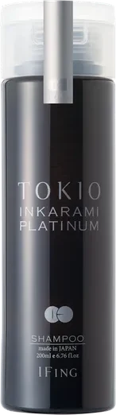
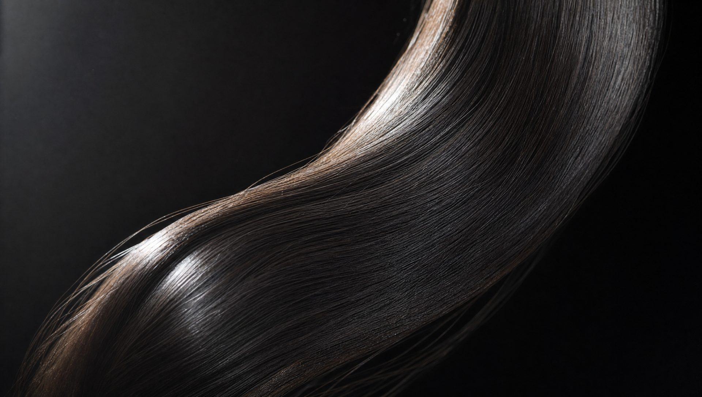
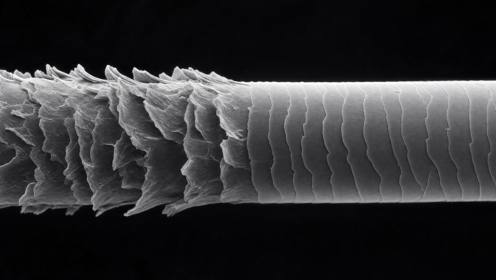
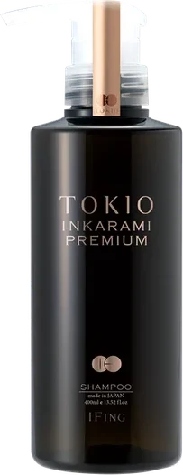
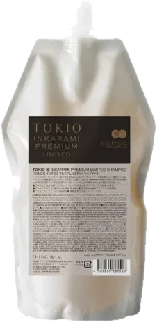
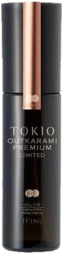
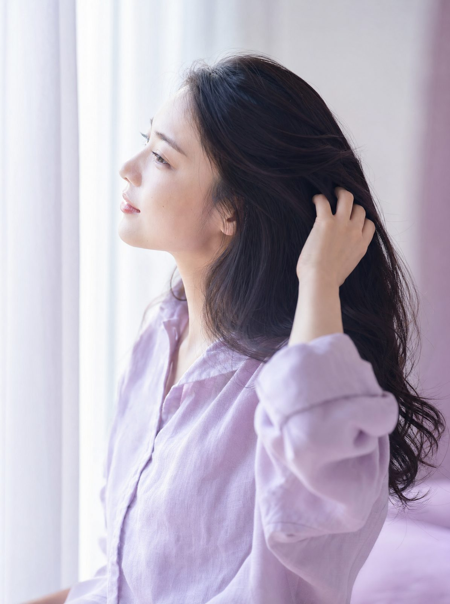

PLATINUM
プラチナム軽く さらりと
カラーやパーマで傷んだ髪 細く絡まりやすい髪に
軽くしなやかな仕上がり
シャンプー・トリートメント 400 各 ¥5,500
詳しく見る
- 主な成分
- 水鳥由来のケラチン ジェミニ型アミノ酸 フラーレン（保湿成分） 洗浄はタウリン系のアミノ酸
- 香り
- レモングラス
- 容量と価格
- 200 各 ¥3,300／400 各 ¥5,500／詰め替え 700 各 ¥8,250

SALON HAIR CARE FROM GINZA, TOKYO
銀座で生まれた ケラチン補修のヘアケア
70%
カラーや熱で失われたケラチンを 外から覆うのではなく 内側から補う
TOKIO インカラミは そのためだけに作られたブランドです
THE TECHNOLOGY
インカラミは「浸透する（IN）」と「絡む（KARAMI）」を合わせた名前
小さなケラチンが髪の内側まで入り 中で結びついて大きくなる だから抜け出しにくい という考え方です
3 種類のケラチンを使用（メーカーの説明） インカラミはメーカーが特許技術としている技術です
OUR COMMITMENT
WHAT HAPPENS IN YOUR HAIR

画像はイメージです
SALON TO HOME
サロンの TOKIO トリートメントは 段階を重ねる施術
家で使うシャンプーには 1 の成分を トリートメントには 2〜4 の成分を入れて 次の施術までの間をつなぎます
THE LINES

PLATINUM
カラーやパーマで傷んだ髪 細く絡まりやすい髪に
軽くしなやかな仕上がり
シャンプー・トリートメント 400 各 ¥5,500

PREMIUM
カラーやアイロンを重ねた 強いダメージの髪に
重みのある しっとりした仕上がり
シャンプー・トリートメント 400 各 ¥6,270

LIMITED
プラチナム リミテッドは ゴワつきや硬さが気になる髪を柔らかく
プレミアム リミテッドは ハリが落ちた髪や毛先のパサつきに
シャンプー・トリートメント 400 各 ¥6,490

OUTKARAMI
洗い流さないトリートメント 4 種
ドライヤーの熱で キューティクルを補修する処方
オイル・ミスト ¥4,290〜
価格はメーカー公式の定価（税込・2026 年 10 月確認） シャンプーとトリートメントは同じシリーズで使うのがメーカーのおすすめです 店頭の在庫は店舗でご確認ください

THE RITUAL

BORN IN GINZA
1990 年代のカラーブームで傷んだ髪を 十分に補修する方法がなかった
その答えとして 銀座の会社が 2011 年に送り出したブランドです
AT SEAM
SEAM GINZA は ONE GINZA 3F 銀座一丁目駅 7 番出口から徒歩 1 分
スタッフが髪を見て ラインと使う順番をご案内します 全 7 店で免税対応 パスポートをお持ちください